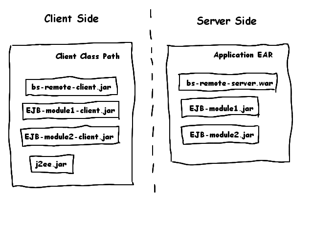

Deployment

The application is packaged using the J2EE specifications. The server side
remoting component is a war. It has to be included in an ear with the different
EJB modules.
The client needs to have the bs-remoting-client.jar, the client libraries of
the EJB modules and the J2EE jar.